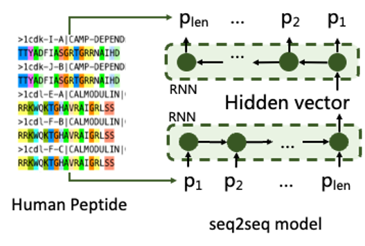
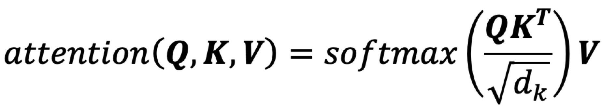
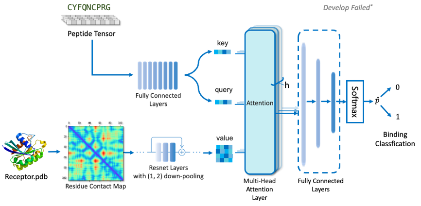
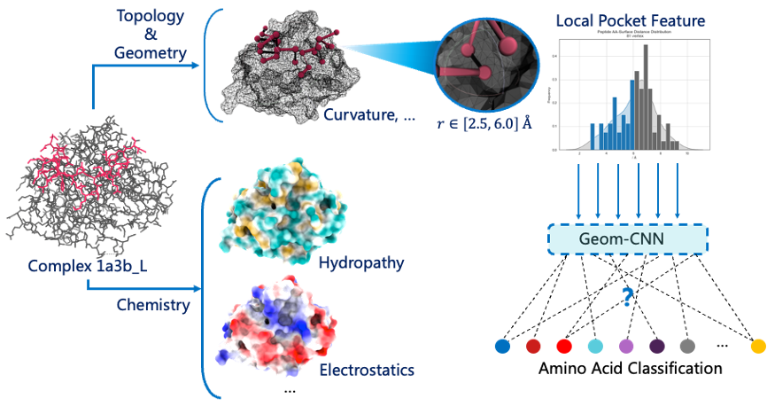
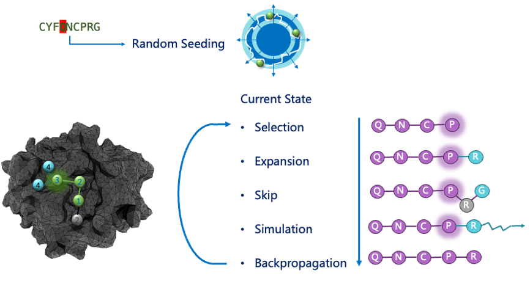
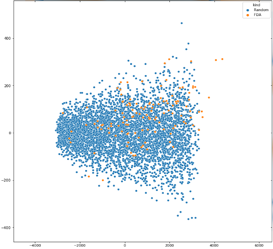
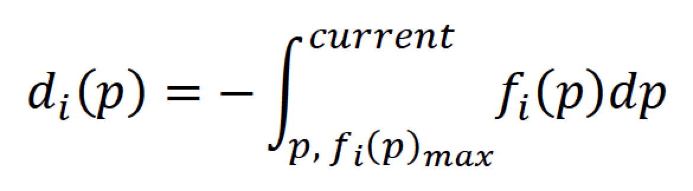
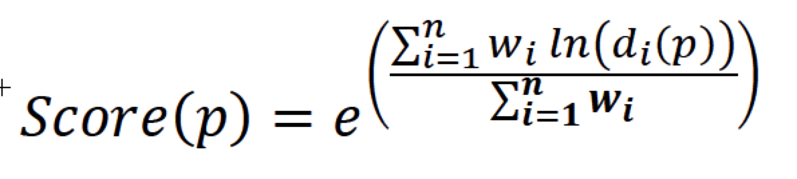

We've iteratively developed 3 version of Peplib Generator, the 1st and 2nd version did't reach our goal, and they are displayed in this page. The 3rd version preliminary realized the function of generate peptide hits, you can read it in Report.
2021.4-2021.7
We adopted the following strategies in the first prototype version of the model:
· Train seq2seq for recharacterization of peptide molecules
· Use particle swarm optimization algorithm to optimize sampling
· Develop multi-head attention-ResNet hybrid model for affinity discrimination
1. Sampling optimizer:
Based on the concept of directed evolution, we believe that optimizing sequences can be carried out in a virtual environment by sampling sequences and scoring. Besides, the evolutionary algorithms similar to genetic algorithms are close to the idea of directed evolution. We tested the genetic algorithm and its variants, particle group optimization algorithm, Ant Colony Optimization Algorithm, Simulated Annealing, Differential Evolution. Using maximum molecular weight as the optimization objective and weighing algorithm effect against sampling efficiency, we optimized the Particle Group Optimization algorithm (PSO) as a sequence sampler. Since the sampling space requires a fixed-dimensional feature space, we developed a characterizer that can transform non-fixed length sequences into fixed length vectors.
2. Peptide characterizer:
Protein sequences are usually arranged in FASTA format, but such data are difficult to enter directly into binding prediction models. Typically, they are connected to an embedding layer for conversion. But for a sampling optimizer, it needs to be done in a fixed dimension. Therefore, sequences of different be transformed into FASTA sequences of variable length. Based on the representational requirements described above, we obtained 2.52m peptide sequences from peptideatlas and screened a 1.44 m dataset of amino acids length 5 – 50 to take thermal encoding as training data and trained a seq2seq model. This model consists of 2 recurrent neural networks for encoding-decoding. Thus, the fixed length vector of the hidden layer can represent any sequence with the limit of 5-50 length .
Figure 1. Training of the characterizer
3. Peptide-protein binding predictor:
(1) Preparation of the training dataset
We obtained data from the following three databases named propedia, pepbdb and pdbbind for about 30k amounts of complex structures. After removing redundant peptides and complex data containing non-natural amino acids, we obtained 6,817 complexes, which were used as positive label training data.In order to solve the problem of unbalanced labeling of positive and negative data, we separated the peptide and target information, randomly combined and filtered the data pairs existing in the positive data set, and took 10% of the training data set as negative label data for cross-validation test of training accuracy.
(2) Compound characterization
Since target protein information does not need to participate in evolutionary iteration, it only needs to embed target protein information. By calculating the Contact Map of the C-alpha centroid distance of each amino acid, in order to avoid pooling caused by excessive single point distance on the image, we discretized the distance distribution with 5% truncation and connected it with the thermal coding of the target protein sequence. We used ResNet to fully extract the characteristics of the above target proteins. For the peptide ligands, Encoder based on seq2seq was used to characterize them.
(3) Ligand-target protein classification learning
After referring to the work of Zheng Mingyue's team in transformerCPI, we introduced multiple attention layers to avoid the over-fitting phenomenon caused by learning a single target or peptide distribution. The target protein information was used as Query, at the same time, the ligand peptide information was used as Key and Value for attentional learning.
Transformer models solve a class of regression tasks. For binary classification model, the mask operation of decoder learning needs to be removed so that it always learns information from full target protein and full peptide sequences. The attention output was activated by a series of fully connected layers and sigmoid to obtain the 0,1 classification result. Binary cross entropy was used as the loss to train the interaction classification model.
Result
For characterization, we achieved 98.01% accuracy in the model with 512 dimension of hidden layer. Coupled with the particle swarm optimization (PSO) algorithm, the sequence converges to 50 amino acids in 19.1 seconds in a test task aimed at finding the longest peptide in the hidden layer space.
However, the accuracy of the peptide interaction classification model (VAL_ACC) on the test data set was only 52.2%, which was close to the random classification result (50.0%). After 2 months of work, we still could not solve the problem of extremely low accuracy. That led us to move on to the development of the 2nd prototype version.
2021.7-2021.8
For the reasons for the unsuccessful use of long-head attention-ResNet learning Contact Map pairing information with peptide in the first version of the model, we analyzed the information revealed by contact map to characterize the characteristics of external interactions in the target protein well, and only to represent internal folding information. Therefore, after referring to the MaSIF model developed by P. Gainza et al., we used the Surface Map with target proteins of chemical and Surface topological topographic structure to replace the Contact Map.
Proteins can be thought of as a flow pattern consisting of a cloud-point graph consisting of "dots" on the protein surface with spatial and chemical information. In prototype version 1, we ignore the spatial structure of the flow pattern and compress it into 2d images for visual learning, which is also the problem of low accuracy caused by information fragmentation. By extending CNN from plane to geometric surface and adding chemical information conducive to interaction identification, 0.99 AUC-ROC was achieved in MaSIF's predicted PPI complex. We believe that this feature can also be applied to prediction of peptide-protein affinity
Therefore, we used MaSIF to calculate the protein surface mesh, including 3D coordinates, tangents, and output the free charge, hydrogen bond, and hydrophobicity of each small point. We plan to design mesh within a small patch of protein surface and develop geometric convolutional networks for binding classification. After observing the distribution of points around the centroid of peptide amino acids in each peptide-protein complex, we took A point set within 2.5-6.0 A.
We conceived the idea that we could completely scan the protein surface based on geometric convolution to get all the possible single amino acid binding regions, and the centroid positions of all the potential amino acids binding. In fact, it was discovered in September that this method is called "RifGen", and the scanned binding amino acid field is called "Rotamer Interaction Field (RIF)". What we have developed is a coarse-grained calculation method based on deep learning.
However, it is still necessary to search the shortest connected conformation on the basis of RIF for the docking conformation of all peptides. We designed monte Carlo tree search to capture the best docking conformation:
Result
We completed the feature extraction of all non-redundant targets in Pepbdb in mid-August, yielding 6,817 mesh files. The corresponding Peptide characterization vector dataset was also prepared.
However, with the release of source code of AlphaFold, we abandoned the model version2, and began the development of peptide drug design models using AlphaFold.
2021.9-2021.10
Methods is displayed in Report, click hyperlink below to visit it!
Result is displayed in Supplementary, click hyperlink below to visit it!
2021.8-2021.10
For most peptide drug companies, this module is often used for in-house development and is not open to the public. Published peptide property predictors also tend to have less function in molecular property prediction and cannot play the role of drug screening.
We don't need to develop multi-target peptide molecular property predictors, we just need to use key attributes to distinguish between peptide molecules and their potential, similar to the Lipinski Five Rules, but at the same time we need to be able to quantify.
By G. Richard Bickerton et al. work on the quantification of drug-like properties, and we have developed a number of properties that are defined as peptide drug properties (Quantitative Estimates of Drug-Likeness, QEPD). We didn't directly develop a pharmacogenic diclassifier because we thought that deep learning was difficult to interpret in abstract assessments and convince drug chemists, so we aggregated the results of predictive molecular properties as a quantitative basis.
We use a mixture of conventional and deep learning algorithms to evaluate the following properties:
· Molecular weight
· Number of hydrogen bond donors
· Number of hydrogen bond receptors
· Molecular polar surface area
· Water solubility
· Half-life
We counted all FDA-approved peptide drugs and our randomly generated sequence at 5-50 amino acid lengths for the above properties, and performed a master ingredient analysis (PCA) to obtain the following results:
Figure 2. PCA visualization results for 6 properties of the class 9 drug-type evaluator
For different properties, the distribution varies greatly, so we count the distribution probability and normalize it with the following changes:
Compare the probability position of the current molecule in the distribution of pharmaceutical peptide properties, and get a normalization score by integrating. For different properties, we refer to QED's calculation method for the following summary:
Among them are the weights between the different properties, which have not been determined because the model has not yet been developed. The higher the QEP score that is eventually distributed between them, the higher the can be considered a peptide drug.
The develop work is still in progress. In the future, we plan to achieve membrane-penetrating prediction, simple toxic rational prediction, etc.
[1].Weng, Gaoqi, et al. "Comprehensive evaluation of fourteen docking programs on protein–peptide complexes." Journal of chemical theory and computation 16.6 (2020): 3959-3969.
[2].Chen, Lifan, et al. "TransformerCPI: improving compound–protein interaction prediction by sequence-based deep learning with self-attention mechanism and label reversal experiments." Bioinformatics 36.16 (2020): 4406-4414.
[3].Bickerton, G. Richard, et al. "Quantifying the chemical beauty of drugs." Nature chemistry 4.2 (2012): 90-98.
Peplib Generator is still under development, source code will be available in GitHub in the future.